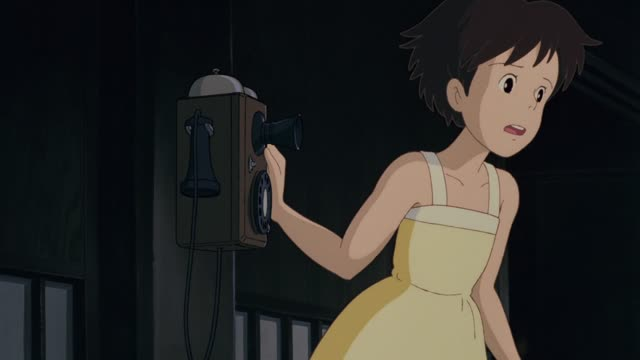
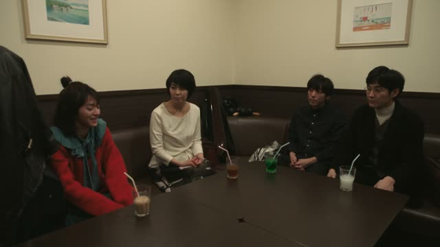

で

Shirokuma Cafe · Season 1, Episode 1
もう外でダラダラしよっと
"[Forget it,] I'll just go laze around outside."
で marks the place where an action happens. It goes right after the place, before the action: 外 + で + ダラダラする.
On this card, ダラダラする is "laze around", and で tells you where. It answers "Do it where?": outside.
Same in polite and casual speech. One thing to watch: for just being somewhere (いる, ある) Japanese uses に, not で: 外にいる, "I'm outside".
Spirited Away
ここで働かせてください！
"Please let me work here!"
で marks where an action happens. On this card, the action is working, and the place is ここ, here. 働かせてください = "please let me work".
Quick Examples
A friend asks where you usually work on your drawings.
カフェで描いてる。
"I draw at a café."
CasualTelling a coworker about your lunch.
コンビニでおにぎりを買いました。
"I bought an onigiri at the konbini."
Where did I buy it? At the konbini, so で. What did I buy? The onigiri, so を.
PolitePlanning a summer weekend in Chigasaki.
海で泳ごう！
"Let's swim in the sea!"
CasualWith and without
図書館にいる。
"I'm at the library." Nobody is doing anything, you just are there. いる and ある take に.
図書館で勉強する。
"I study at the library." There's an action (勉強する), so the place gets で.
Examples from Media

PiroPito First Playthrough of Minecraft #06
朝までここで籠城してます。
"I'll hole up here until morning."
ここで: here, where the holing up happens. 籠城 is literally "shutting yourself in a castle".

My Neighbor Totoro
おばあちゃん、ここで待たせてください。
"Granny, please let me wait here."
The action is waiting, the place is ここ. 待たせてください = "let me wait".
Tales from Earthsea
もう少しここで休んで行きます。
"I'll rest here a little longer before I go."
休む (rest) happens here, so ここで. もう少し = a little more.

Teasing Master Takagi-san · Season 3, Episode 3
ここでゲップしたら絶対にバカにされる。
"If I burp here, she'll definitely make fun of me."
Burping is the action, ここ is where. So ここで.

Pokémon The Series: Indigo League · Episode 2
あとは病室の方で回復を待つだけ。
"All that's left is to wait in the recovery room for it to get better."
Waiting is the action, the hospital room is where. 方 just softens it: "over in the room".

Shirokuma Cafe · Season 1, Episode 4
助手席で寝るなんて失礼なこと僕はしないよ！
"I'd never do something as rude as sleep in the passenger seat!"
Sleeping is the action, the passenger seat is where. So 助手席で寝る.
Kotaro Lives Alone · Episode 8
外で遊ぼうぜー！
"Let's play outside!"
外で: where the playing happens.

Quartet · Episode 10
外で弾いてて。
"Go play outside."
弾く: play an instrument. 外で: where.
Further Reading
A Dictionary of Basic Japanese Grammar
Entry "de¹" (location) · pp. 105–106
Tae Kim's Guide to Japanese Grammar
Particles used with verbs · The contextual 「で」 particle